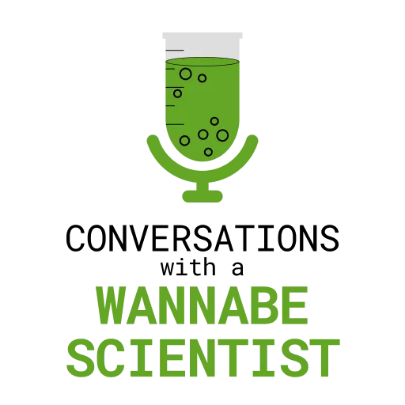

Conversations with a Wannabe Scientist Software Development and Graphic Design
From January to June of 2021, I contributed some software development and graphic design work for the podcast Conversations with a Wannabe Scientist and its website. I used HTML and CSS to add additional functionality and customization to its Blogger website, which led to increase in site views of over 210% from 2020 to mid 2021. I also used Figma to create the podcast cover and website logo.
